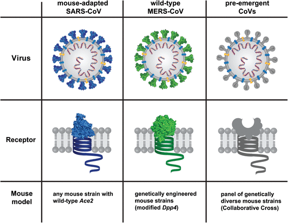

In 2003, following the outbreak of severe acute respiratory syndrome (SARS) which had begun the prior year in Asia, and secondary cases elsewhere in the world, the World Health Organization (WHO) issued a press release stating that a novel coronavirus identified by a number of laboratories was the causative agent for SARS. The virus was officially named the SARS coronavirus (SARS-CoV). More than 8,000 people were infected, about ten percent of whom died.
In September 2012, a new type of coronavirus was identified, initially called Novel Coronavirus 2012, and now officially named Middle East respiratory syndrome coronavirus (MERS-CoV). The World Health Organization issued a global alert soon after. The WHO update on 28 September 2012 said the virus did not seem to pass easily from person to person. However, on 12 May 2013, a case of human-to-human transmission in France was confirmed by the French Ministry of Social Affairs and Health. Two confirmed cases involved people who seemed to have caught the disease from their late father, who became ill after a visit to Qatar and Saudi Arabia. Despite this, it appears the virus had trouble spreading from human to human, as most individuals who are infected do not transmit the virus. By 30 October 2013, there were 124 cases and 52 deaths in Saudi Arabia.
In May 2015, an outbreak of MERS-CoV occurred in the Republic of Korea, when a man who had traveled to the Middle East, visited four hospitals in the Seoul area to treat his illness. This caused one of the largest outbreaks of MERS-CoV outside the Middle East. As of December 2019, 2,468 cases of MERS-CoV infection had been confirmed by laboratory tests, 851 of which were fatal, a mortality rate of approximately 34.5%.
In December 2019, a pneumonia outbreak was reported in Wuhan, China. On 31 December 2019, the outbreak was traced to a novel strain of coronavirus,which was given the interim name 2019-nCoV by the World Health Organization (WHO), later renamed SARS-CoV-2 by the International Committee on Taxonomy of Viruses.
As of 4 July 2020, there have been at least 525,491 confirmed deaths and more than 11,093,182confirmed cases in the COVID-19 pandemic. The Wuhan strain has been identified as a new strain of Betacoronavirus from group 2B with approximately 70% genetic similarity to the SARS-CoV. The virus has a 96% similarity to a bat coronavirus, so it is widely suspected to originate from bats as well. The pandemic has resulted in travel restrictions and nationwide lockdowns in many countries.